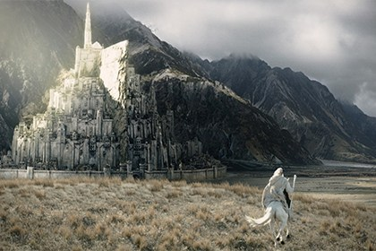
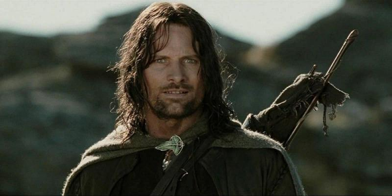
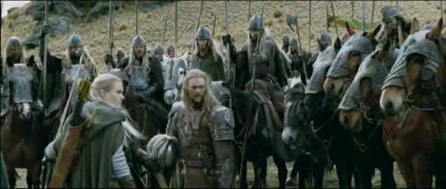
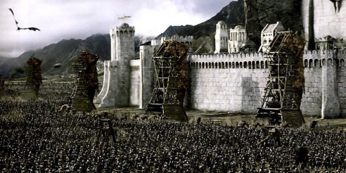
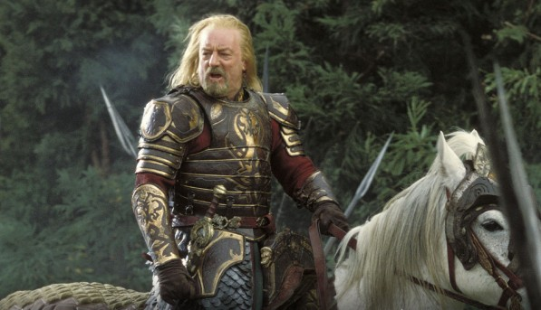

Глава 1 Мінас Тіріт
 Піппін виглянув з-під плаща Гендальфа. Він ніяк не міг зрозуміти, уві сні або наяву свистить у вухах чорний нічний вітер, повільно пливе зубчаста тінь гір далеко праворуч, уві сні або наяву гойдається у нього над головою зоряне небо. Він намагався пригадати, що з ним і де він, але думки плуталися, окремі картини змінювали один одного. Пам'ятається, вони мчали без зупинок, летіли все вперед і вперед, і там, попереду, вставав на світанку золотистий м'який блиск, і було місто, затоплений тишею, і гучна порожнеча великого палацу на пагорбі. Вони увірвалися під його склепіння в той самий момент, коли вгорі пронеслася величезна крилата тінь, і жах вибілив особи людей навколо. Пиппин згадав, як і його серце стиснула крижана рука. Але поруч був Гендальф, і жах пішов, залишилася тільки втома. Піппін спав, але сон був тривожним, в ньому ходили і розмовляли незнайомі люди, щось наказував Гендальф. І далі, без переходу, знову скажена стрибка крізь ніч. З тих пір як він заглянув в Палантір, пройшло двоє, немає, три доби. Палантір! Це було жахливо! З цим спогадом він прокинувся остаточно. Навколо шумів і бурмотів все той же вітер.
Замітка 1 Яскравий жовтий вогонь в темному небі змусив Піппін скулитися від страху. Навіщо Гендальф везе його в це страшне, там, попереду? Він протер очі. На сході сходив місяць. Значить, вони будуть скакати і скакати, мчати крізь ніч нескінченно довго. - Де ми, Гендальф? - На землях Гондора. Це - Анора. Піппін притих, але тут же притулився до магу. - Що там? Дивись! Червоний вогонь! Як дракона очей. А он ще один! Гендальф тільки крикнув коневі: - Вперед, Сполох, вперед! Поспішай, друже! - і, нахилившись до Піппін, сказав: - Дивись. Це звуть на допомогу вогні Гондора. Війна почалася. Ось вогонь на Амон Діні, полум'я на Еленахе, і далі вогні, Нардол, Ерелас, Мін Риммон, Каленхад і Халіфіріен біля кордонів Рохана. Вперед, Сполох!
Глава 2 Вибір Арагорна
Коли стих тупіт копит спалахом, що відносить Гендальфа і Піппін, Меррі повернувся до Арагорна. Сумку свою він втратив ще в Порт Галене, збирати було нічого - так, деякі корисні дрібниці з руїн Ізенгард. Леголас і Гімлі очікували тільки сигналу рушити в дорогу. - Нас залишилося четверо, - сказав Арагорн. - Ми будемо разом, ми підемо не одні. Після цього крилатого жаху король вирішив виступати негайно і повертатися до пагорбів під прикриттям ночі. - А потім куди? - запитав Леголас. - Ще не знаю. Цар наказав військам зібратися в Едорас на четверту ніч після цієї. Там, я думаю, його чекають вести про війну, і Вершники Рохана рушать до Мінас Тіріт. Але у мене інша дорога. - Я з тобою, - тут же сказав Леголас. - І я теж, - відгукнувся Гімлі. - Мій шлях ще темний для мене, - задумливо відповів Арагорн. - Здається, настає час, до якого я готувався все життя. Нам теж потрібно потрапити в Мінас Тіріт, але яким шляхом ми прийдемо туди, я ще не вирішив. - А я? - подав голос Меррі. - До сих пір від мене було небагато користі, але я все-таки не якась там дрібничка. Вершникам не до мене, Замітка 2 хоча їх Правитель і обіцяв, що ми поговоримо з ним про Ширше після повернення. - Мені бачиться, що ти повинен йти з ним, Меррі, - сказав Арагорн. - І не розраховуй на веселу прогулянку! Теодену довго ще не сидіти в спокої Золотих Палат. Чимало надій вичерпається цієї гіркої навесні! Вони вирушили затемна. Теоден, з ним двадцять два Вершника, Леголас з Гімлі і Арагорн з Меррі. Уже переправившись через Ізен, вони почули за спиною тупіт. Їх нагнав Вершник з ар'єргарду.
Глава 3 Рохан збирає війська
Відтепер всі дороги вели на схід, назустріч Темряві. У той самий час, коли Піппін, стоячи перед воротами Міста, дивився на вхідні війська, король Рохана на чолі великого загону вершників спускався з гір. Вечоріло. Довгі тіні, переганяючи коней, бігли попереду по долині. На лісистих схилах було вже темно. Після дня шляху король їхав повільно. Стежка, огинаючи величезний скельний уступ, пірнула під склепіння тихо шепітних ялин. Все нижче і нижче спускався загін в долину. Блиск водоспадів приглушали сутінки. Весь цей день воїни спускалися вниз уздовж струмка; тепер разом з ними він кинувся в широку долину, поглинув невеликий приплив і, збиваючи піну, помчав по камінню до Едорас. У верхів'ях долини, немов замикаючи її, височів могутній гірський пік з вершиною, вкритої вічними снігами. На східних його схилах густо синіли тіні, західні схили палали у вогні заходу. Меррі з подивом озирався на всі боки. Йому було цікаво в незнайомій країні. Це був край без неба; в туманному серпанку очей розрізняв тільки гори, кам'яна стіна вставала за стіною, між ними розверзається провалля, заповнені туманом. Від могутніх водоспадів повітря тихо дзвенів, шуміли дерева, стукали по камінню копита. Раніше Меррі любив слухати про горах, думати про них, але тепер, коли гірські хребти здіймалися навколо під самі небеса, він відчував себе незатишно, жваво відчуваючи велетенську тяжкість, гнітючу грудиСреднеземьеСереднозем'є. Занадто вони були великі; дивлячись на них, хотілося опинитися в маленькій кімнатці біля каміна. Замітка 3
Глава 4 Облога Міста
Гендальф розбудив Піппін. За вікнами і раніше було темно, в кімнаті горіли свічки. Духота стояла, як перед грозою. - Котра година? - запитав Пиппин, позіхаючи. - Початок третього, - відповів маг. - Одягайся, тебе закликає Правитель. Сподіваюся, ти не забув, що служиш йому? - А він дасть нам поснідати? - Ні. Сніданок готовий, - Гендальф кивнув на стіл, - і до обіду більше нічого не буде. У Місті економлять провізію. Пиппин похмуро розглядав невелику окраєць хліба, дуже маленьку (на його погляд) порцію масла і чашку молока. - І навіщо ти мене привіз сюди? - пробурчав він. - Щоб перешкодити тобі робити дурниці, - в тон йому відповів маг. - Якщо тобі тут не до вподоби, то, крім себе, звинувачувати нема кого. Пиппин насупився і замовк. Замітка 4 Коли Гендальф знову привів його в зал зі статуями і колонами, Денетор сидів на тому ж самому місці. «Як старий, терплячий павук, - подумалося Піппін. - Він що, так зі вчора і сидить тут? »Правитель запропонував Гендальфа сісти, не звертаючи уваги на стоїть Піппін, але потім жваво обернувся до Хоббіта. - Ну, добрий мій Перегрин, сподіваюся, ти провів вчорашній день з користю і пріятством. Ось тільки частування могло здатися тобі мізерний. Але - війна. - Він злегка розвів руками. Піппін почервонів. Йому здалося, що Правителю відомі не тільки його слова, але і думки. - Що ж ти маєш намір робити у мене на службі? - запитав Денетор. - Я думаю, що повелитель вкаже мої обов'язки. - Зазначу. Коли дізнаюся, що ти можеш. А для цього найкраще залишити тебе при собі. Виконуватимеш мої доручення, розмовляти зі мною, коли буде час. Співати вмієш?
Глава 5 Похід Теодена
Меррі лежав, загорнувшись у ковдру, і марно вдивлявся в темряву. Ніч була тихою, безвітряної, тільки дерева ледь чутно зітхали навколо. Він підняв голову і знову почув насторожити його звук. Десь вдалині глухо били барабани. Замовкаючи в одному місці, удари тут же виникали, в іншому. Цікаво, чи чують їх часові? Невидимі в темряві, розташувалися на відпочинок війська рохіррімов. Пахло кіньми. Меррі чув, як вони пофоркували і м'яко переступають копитами по посипаної хвоєю землі. На ніч Теоден зупинився в глухому сосновому бору біля підніжжя сигнального пагорба Елен, який піднімався високо над вершинами Друаданского Лісу. Від втоми Меррі не міг заснути. Йшли п'яту добу походу. Морок, який ставав все щільніше, приводив воїнів в зневіру. Меррі вже не розумів, навіщо так рвався в цей похід, адже ясний наказ короля дозволяв йому залишитися. Хоббіт вже не раз приймався гадати, чи знає король про його самоправність. А якщо знає, то що думає? Напевно, Дернхельм якось домовився з Ельфхельмом, командиром їх «йореда» (так Вершники називали загони). У всякому разі, воїни намагалися не помічати зайвого новобранця. З ним ніхто не розмовляв, а якщо дивилися, то як на зайву переметна суму за спиною Дернхельма. Та й сам молодий Вершник за всю дорогу не промовив жодного слова. Замітка 5 Тут мимоволі почнеш відчувати себе нікому не потрібною тягарем. Війська Теодена все ближче підходили до небезпечних місць. До зовнішніх укріплень Мінас Тирита залишалося менше дня шляху. Розвідники, яким вдалося повернутися, доповіли, що дорога попереду захоплена ворогом. За три милі на захід від Амон Діна стоїть ціла орда, а великий загін орків йде назустріч. Вони вже в трьох-чотирьох лігах від Друаданского Лісу.